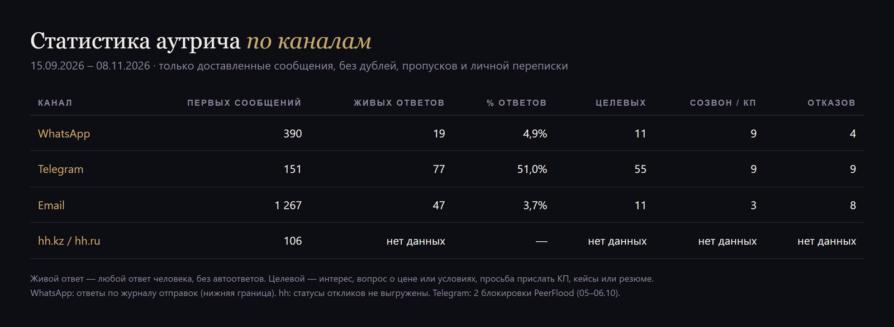
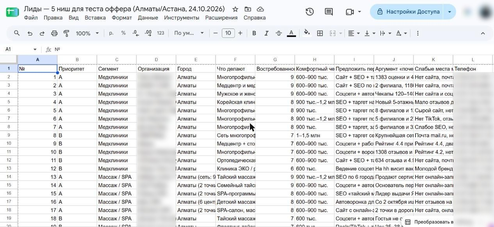
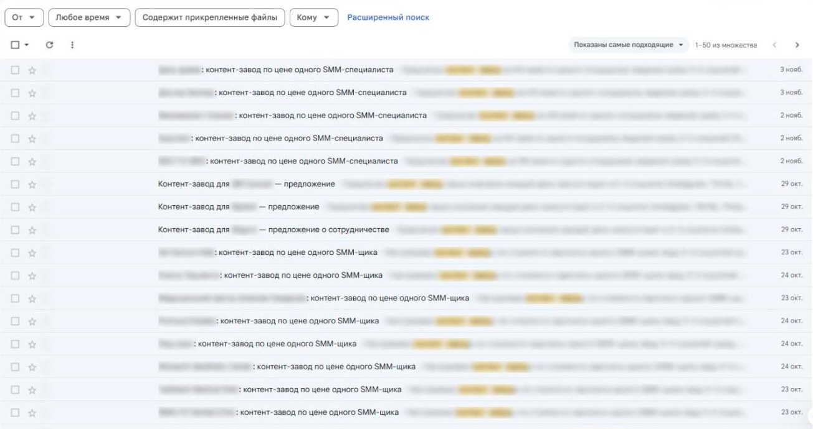

Пруфы
Скриншоты из рабочей системы
Названия компаний, имена и контакты скрыты.





Я нахожу компании, которым ваш продукт нужен прямо сейчас, пишу каждой своё сообщение под её ситуацию и передаю вашим менеджерам тех, кто ответил и ждёт расчёт. Менеджеры не обзванивают списки, а разговаривают с тёплыми клиентами.
В США и Европе это называют signal-based outbound. Системы для таких продаж строят GTM-инженеры (от go-to-market — выход на рынок). Идея простая: не звонить всем подряд, а сначала найти компании, у которых прямо сейчас появилась потребность, и прийти к ним первыми с предложением под их ситуацию.
| Что | Данные | Источник |
|---|---|---|
| Главный сервис для таких продаж — Clay | больше 17 000 компаний-клиентов, среди них Google, OpenAI, Anthropic, Stripe. Оценка выросла с 3,1 до 7,1 млрд долларов за год | The Next Web, сентябрь 2026 |
| Ответы на сообщение по поводу, например смене руководителя | 15–25% против 5–8% у обычных холодных сообщений | UserGems |
| Сообщения, написанные с ИИ по данным о компании | 21% ответов против 9% у шаблонных | Martal Group |
| Кто получает клиента | 78% B2B-покупателей выбирают поставщика, который вышел на связь первым | Amplemarket |
| Мой тест в Казахстане, сентябрь–ноябрь 2026 | 13% ответов на сообщение с разбором компании, 2–3% на одинаковое предложение | мой кейс |
В Казахстане и в СНГ B2B-продажи до сих пор строятся на холодном обзвоне и рассылках по купленным базам. Западные сервисы здесь почти не используют: они дорогие и плохо знают местные данные — 2ГИС, БИН, казахстанские вакансии и закупки. Поэтому я собрала свою систему под местный рынок. Пока так почти никто не работает, у того, кто начнёт первым, есть фора.
Источники: thenextweb.com/news/clay-raises-115m-series-d-7-1bn-valuation-wellington; autobound.ai/blog/signal-driven-personalization-at-scale (данные UserGems, Martal Group, Amplemarket).
| Холодный обзвон | Как работаю я | |
|---|---|---|
| Кому звонят | всем по списку | тем, у кого есть признаки, что ваш продукт нужен сейчас |
| Что говорят | один сценарий для всех | отдельное сообщение под каждую компанию: её новая точка, её продукт, её сроки |
| Первый контакт | звонок в лоб | сообщение в WhatsApp и письмо, без давления |
| С кем говорит менеджер | с теми, кто взял трубку | с теми, кто ответил и проявил интерес |
| Что остаётся у вас | список звонков | база компаний с признаками, вся переписка и карточка на каждого тёплого клиента |
| Признак | Что он значит | Где ищу |
|---|---|---|
| Новая точка кафе, кофейни или магазина | нужны меню, упаковка, листовки, вывеска | новые карточки в 2ГИС за 3 месяца, Instagram |
| Новый продукт или смена упаковки | нужна новая упаковка и этикетка | сайты и соцсети производителей, новости |
| Вакансия маркетолога | компания вкладывается в продвижение | hh.kz |
| Участие в выставке | нужны каталоги и раздаточные материалы | списки участников выставок |
| Закупка полиграфии | прямая потребность с бюджетом | госзакупки и закупки крупных компаний |
| Сезон | корпоративные подарки, календари | ноябрь–декабрь, перед Наурызом и 8 Марта |
Для вашей ниши признаки свои. Клиники и стоматологии — новый филиал и вакансия SMM. Застройщики — новый ЖК и старт продаж. Поставщики HoReCa — открытия заведений. IT и сервисы — рост штата и новые вакансии. Их я определяю вместе с вами на первой неделе.
Названия компаний, имена и контакты скрыты.



| Старт | Базовый | |
|---|---|---|
| Для чего | проверить подход на одной группе клиентов | полноценный поток тёплых клиентов на месяц |
| Срок | 4 недели | 5 недель |
| Группы клиентов | 1 | 2 |
| Компаний собираю и проверяю по признакам | 200 | 400 |
| Компаний, которым пишу лично | 100 | 200 |
| Напоминания | до 2 на компанию | до 2 на компанию |
| Передача тёплых клиентов менеджеру с карточкой | да | да |
| Таблица со статусом каждой компании | да | да |
| Отчёт | итоговый | еженедельный и итоговый |
| Остаток базы с оценками для следующих волн | 100 компаний | 200 компаний |
| Стоимость, Казахстан | 250 000 ₸ | 450 000 ₸ |
| Стоимость, Россия | 60 000 ₽ | 110 000 ₽ |
| За одну компанию, которой пишу лично | 2 500 ₸ / 600 ₽ | 2 250 ₸ / 550 ₽ |
Основная работа не в отправке сообщения, а в том, что ему предшествует: найти компанию, человека, который принимает решение, признаки потребности и написать текст под её ситуацию. Поэтому цена считается от числа компаний, которым я пишу лично.
Предлагаю начать со «Старта». Если подход сработает на одной группе, переходим на «Базовый» и добавляем вторую. Если с первых недель видно, что группа не отвечает, меняю её, не дожидаясь конца срока.
Сервисы для поиска, разбора и учёта входят в стоимость. С вашей стороны — отдельный номер WhatsApp (SIM-карта) и почтовый ящик на домене компании. Стоимость указана на руки, без налогов.
Число сделок заранее не обещаю: в B2B от первого разговора до заказа часто проходит больше месяца. Но через 4–5 недель у вас будут реальные цифры для планирования.
| Когда | Что происходит |
|---|---|
| Неделя 1 | разговор о ваших клиентах и продуктах, выбор групп и признаков, подготовка номера и почты |
| Неделя 2 | сбор и проверка базы, очерёдность, тексты первых сообщений вам на согласование |
| Неделя 3 | первые сообщения, 10–20 в день, чтобы номер не заблокировали; ответы и передача менеджеру |
| Неделя 4 | напоминания, разговоры менеджера с тёплыми клиентами; в «Старте» — итоговый отчёт |
| Неделя 5 | только в «Базовом»: вторая группа, последние напоминания, итоговый отчёт |
Оплата: половина до начала работ, вторая половина после сдачи первого этапа, перед выходом на контакт.
Напишите мне: расскажите, что вы продаёте и кто ваш лучший клиент, — предложу группы и признаки для первой волны.
Написать в TelegramНаписать в WhatsApp